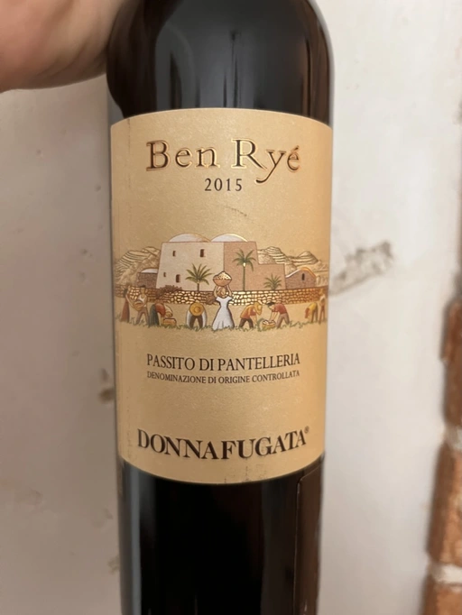

- Type
- White Still, Sweet
- Producer
- Donnafugata
- Vintage
- 2015
- Location
- Italy, Pantelleria DOC
- Grapes
- Zibibbo
- Alcohol
- 14.5
- Sugar
- 193
- Price
- 1257 UAH, 847 UAH
- Cellar
- 1 bottle
From the Arabic term “Son of the Wind” because the wind sweeps constantly around the grape clusters on Pantelleria. And the island’s winds bring with them a profusion of fragrances so powerful that you can touch them. An author label telling the love, the care and the effort of heroic viticulture on an island unique and fascinating. A fresh and enchanting portrait that reveals its essence.
Ben Ryé 2015 has a brilliant amber color. The nose offers a fragrant and complex bouquet, with notes of fresh apricot and orange zest combined with scents of Mediterranean scrub (thyme and rosemary). The palate amazes with its great freshness and intensity, with a pleasant sweetness balanced by great minerality and lively sapidity. It finishes with a lingering persistence, with a satisfying return of the fruity note. A complex and captivating Passito di Pantelleria, one of the most appreciated Italian sweet wines in the world.
Donnafugata
Ratings
2020-04-14 - 10.00
На острові Пантеларія вічний вітер, який ускладнює роботу з виноградом. Син Вітру (а саме так перекладається Ben Rye) - продукт співпраці та боротьби людини та природи. Цей зв’язок такий сильний. що його відчуваєш. Це вино про сонце, про бриз та пагорби з квітами. Вино про відсутність часу (який звісно вітер змив) та прекрасність життя. Один ковток - і все інше не важливо.
Аромат інтенсивний, фініки, стиглі абрикоси, карамель, тим’ян, розмарин, апельсинова цедра та шкірочка волоського горіху. Освіжаюча кислотність, масляниста структура, прекранчий баланс на довгий післясмак. Ноти персиків, тим’яну та нагрітого каміння. Пити таке вино - це просто свято.
2020-04-15 - 10.00
2020-04-24 - 10.00
2020-09-12 - 9.50
Every bottle of Ben Rye is a fiesta. Ripe apricot, apricot jam, flowers, pine nut, date fruit, caramel. Fresh, structured and balanced wine. Son of the Wind steals my hear each time.